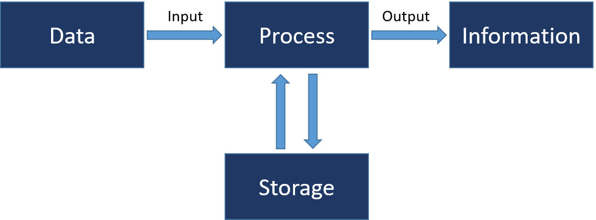
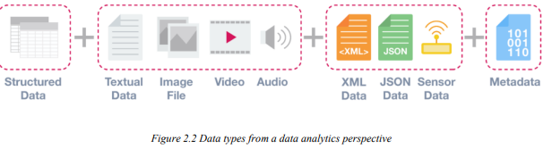

What is Data Science?
Data science is a multi-disciplinary field that uses scientific methods, processes, algorithms, and systems to extract knowledge and insights from structured, semi-structured and unstructured data. Data science is much more than simply analyzing data. It offers a range of roles and requires a range of skills.
Data
- Data can be defined as a representation of facts, concepts, or instructions in a formalized manner, which should be suitable for communication, interpretation, or processing, by human or electronic machines. It can be described as unprocessed facts and figures. It is represented with the help of characters such as alphabets (A-Z, a-z), digits (0-9) or special characters (+, -, /, *, <,>, =, etc.).
Information
- Information is the processed data on which decisions and actions are based. It is data that has been processed into a form that is meaningful to the recipient and is of real or perceived value in the current or the prospective action or decision of recipient. Furtherer more, information is interpreted data; created from organized, structured, and processed data in a particular context.
Data Processing Cycle
Data processing is the re-structuring or re-ordering of data by people or machines to increase their usefulness and add values for a particular purpose. Data processing consists of the following basic steps - input, processing, and output. These three steps constitute the data processing cycle.
- Input − in this step, the input data is prepared in some convenient form for processing. The form will depend on the processing machine.
- Processing − in this step, the input data is changed to produce data in a more useful form.
- Output − at this stage, the result of the proceeding processing step is collected. The particular form of the output data depends on the use of the data.
Data Types and their representation
Data types from Computer programming perspective
- Integers(int)- is used to store whole numbers, mathematically known as integers.
- Booleans(bool)- is used to represent restricted to one of two values: true or false.
- Characters(char)- is used to store a single character.
- Floating-point numbers(float)- is used to store real numbers.
- Alphanumeric strings(string)- used to store a combination of characters and numbers.
Data types from Data Analytics perspective
Structured Data
Structured data is data that adheres to a pre-defined data model and is therefore straightforward to analyze. Structured data conforms to a tabular format with a relationship between the different rows and columns. Common examples of structured data are Excel files or SQL databases. Each of these has structured rows and columns that can be sorted.
Semi-structured Data
Semi-structured data is a form of structured data that does not conform with the formal structure of data models associated with relational databases or other forms of data tables, but nonetheless, contains tags or other markers to separate semantic elements and enforce hierarchies of records and fields within the data. Therefore, it is also known as a self-describing structure. Examples of semi-structured data include JSON and XML are forms of semi-structured data.
Unstructured Data
Unstructured data is information that either does not have a predefined data model or is not organized in a pre-defined manner. Unstructured information is typically text-heavy but may contain data such as dates, numbers, and facts as well. This results in irregularities and ambiguities that make it difficult to understand using traditional programs as compared to data stored in structured databases. Common examples of unstructured data include audio, video files or No-SQL databases.
Data Value Chain
The Data Value Chain is introduced to describe the information flow within a big data system as
a series of steps needed to generate value and useful insights from data.
The Big Data Value Chain
identifies the following key high-level activities:
Data Acquisition
It is the process of gathering, filtering, and cleaning data before it is put in a data warehouse or any other storage solution on which data analysis can be carried out. Data acquisition is one of the major big data challenges in terms of infrastructure requirements. The infrastructure required to support the acquisition of big data must deliver low, predictable latency in both capturing data and in executing queries; be able to handle very high transaction volumes, often in a distributed environment; and support flexible and dynamic data structures.
Data Analysis
It is concerned with making the raw data acquired amenable to use in decision-making as well as domain-specific usage. Data analysis involves exploring, transforming, and modeling data with the goal of highlighting relevant data, synthesizing and extracting useful hidden information with high potential from a business point of view. Related areas include data mining, business intelligence, and machine learning.
Data Curation
It is the active management of data over its life cycle to ensure it meets the necessary data quality requirements for its effective usage. Data curation processes can be categorized into different activities such as content creation, selection, classification, transformation, validation, and preservation. Data curation is performed by expert curators that are responsible for improving the accessibility and quality of data. Data curators (also known as scientific curators or data annotators) hold the responsibility of ensuring that data are trustworthy, discoverable, accessible, reusable and fit their purpose. A key trend for the duration of big data utilizes community and crowdsourcing approaches.
Data Storage
It is the persistence and management of data in a scalable way that satisfies the needs of applications that require fast access to the data. Relational Database Management Systems (RDBMS) have been the main, and almost unique, a solution to the storage paradigm for nearly 40 years. However, the ACID (Atomicity, Consistency, Isolation, and Durability) properties that guarantee database transactions lack flexibility with regard to schema changes and the performance and fault tolerance when data volumes and complexity grow, making them unsuitable for big data scenarios. NoSQL technologies have been designed with the scalability goal in mind and present a wide range of solutions based on alternative data models.
Data Usage
It covers the data-driven business activities that need access to data, its analysis, and the tools needed to integrate the data analysis within the business activity. Data usage in business decision-making can enhance competitiveness through the reduction of costs, increased added value, or any other parameter that can be measured against existing performance criteria.
Hadoop and its Ecosystem

Big Data Life Cycle with Hadoop
- Ingesting data into the system
- Processing the data in storage
- Computing and analyzing data
- Visualizing the results
The first stage of Big Data processing is Ingest. The data is ingested or transferred to Hadoop from various sources such as relational databases, systems, or local files. Sqoop transfers data from RDBMS to HDFS, whereas Flume transfers event data.
The second stage is Processing. In this stage, the data is stored and processed. The data is stored in the distributed file system, HDFS, and the NoSQL distributed data, HBase. Spark and MapReduce perform data processing.
The third stage is to Analyze. Here, the data is analyzed by processing frameworks such as Pig, Hive, and Impala. Pig converts the data using a map and reduce and then analyzes it. Hive is also based on the map and reduce programming and is most suitable for structured data.
The fourth stage is Access, which is performed by tools such as Hue and Cloudera Search. In this stage, the analyzed data can be accessed by users.